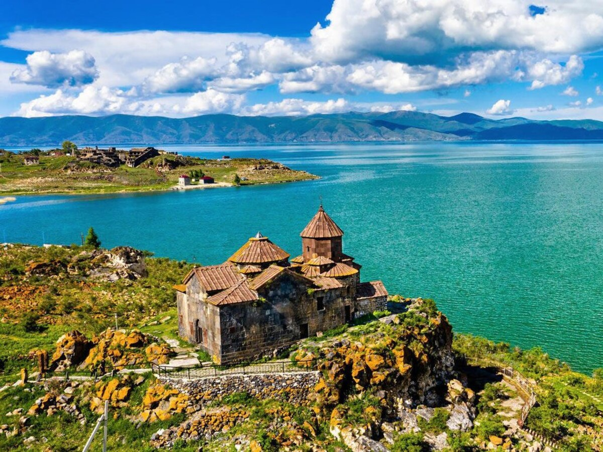

Sevanavank Monastery
Climb the peninsula steps for historic churches and a wide panorama across the lake.

The Blue Pearl
Mountain horizons, deep-blue water and centuries of Armenian heritage.
Set high in the Armenian mountains, Lake Sevan is one of the country’s defining landscapes—a place for panoramic views, ancient monasteries, summer relaxation and fresh local flavors.
The Blue Pearl
Lake Sevan lies around 1,900 meters above sea level and is among the largest high-altitude freshwater lakes in the world. Its changing shades of blue and surrounding mountains make every season look different.
The lake has supported communities for centuries. Today visitors come for Sevanavank, beaches, boat rides, watersports, lakeside meals and the restorative openness of the landscape.
Explore
Climb the peninsula steps for historic churches and a wide panorama across the lake.
Walk the shoreline, visit viewpoints and enjoy changing perspectives over the water.
Relax by the water during summer at public or hotel beaches suited to different travel styles.
See Sevan from the water on a seasonal private or shared boat ride.
Explore one of Armenia’s most remarkable fields of medieval carved cross-stones on the lake’s southern side.
Visit a quieter lakeside monastery with open views and a peaceful atmosphere.
Experience Sevan beyond the viewpoint
Begin at Sevanavank before the crowds, continue along quieter shores, taste local fish and spend time on the water when the season allows. For active travelers, kayaking, sailing and nearby hiking can add depth to the day.
Fresh flavors by the lake
Local menus often feature Sevan trout, whitefish, crayfish dishes, grilled vegetables, herbs and Armenian bread. A lakeside lunch is part of the experience, especially on a clear sunny day.
When to visit
June to early September is best for beaches and water activities. Late spring and autumn offer crisp views and fewer visitors. The lake is beautiful in winter, but it is cold and windy and some seasonal services close.